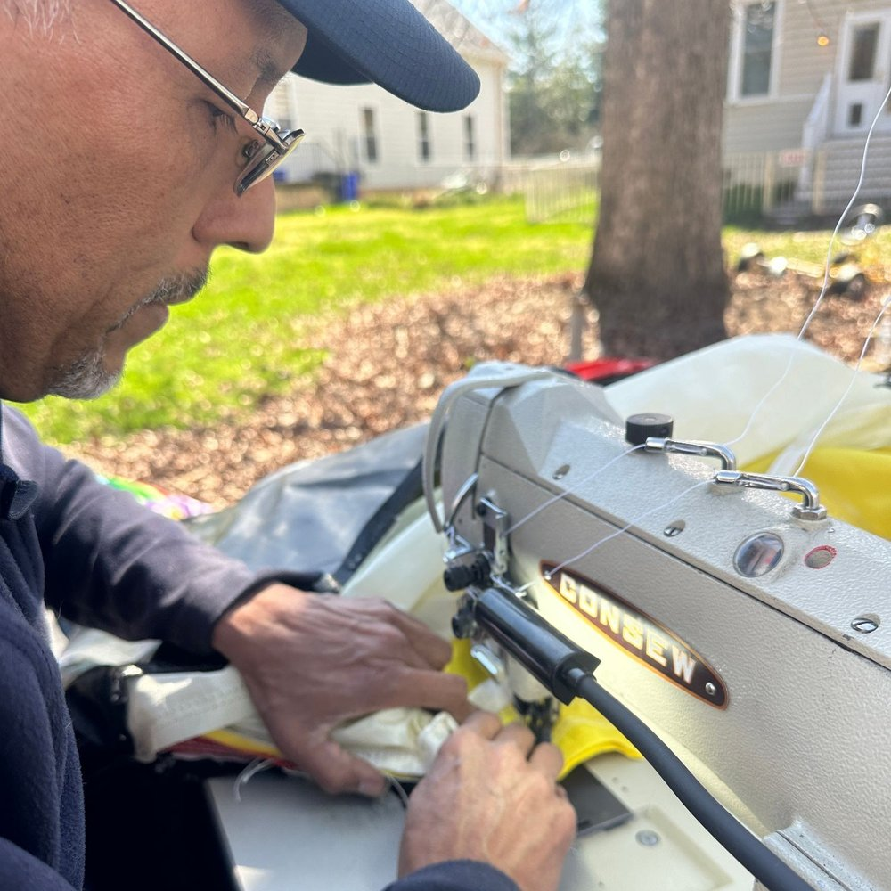
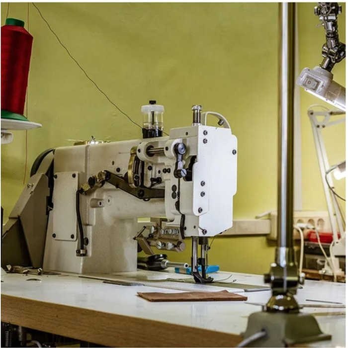
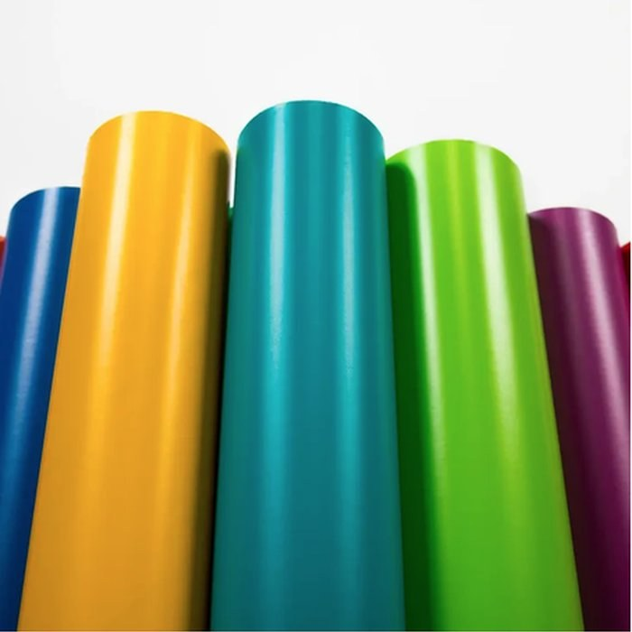
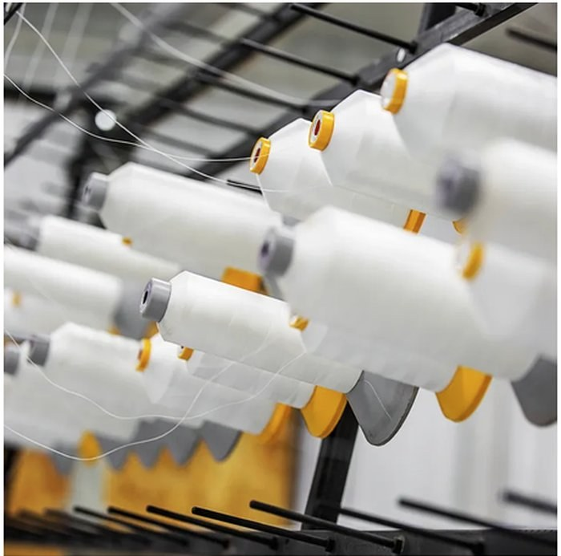
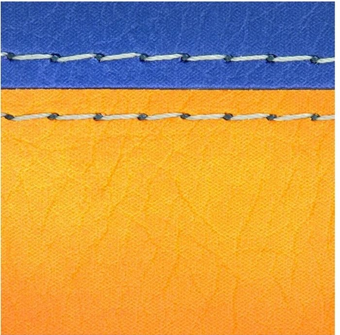

The East Coast Inflatable Repair Center
Trust Stitches For Bounces to repair your inflatable — commercial-grade repair expertise since 2009.
Established in 2009
Stitches For Bounces LLC has been repairing commercial inflatables out of Ocean County, New Jersey since 2009. What started with one owner-operator and a single industrial sewing machine has grown into a full-time repair shop that party rental companies across the country rely on to keep their bounce houses, water slides and obstacle courses in service.
Most of our work comes from rental businesses, not individual homeowners — operators who can't afford downtime and need repairs done right the first time. We travel on-site for customers within reach of Toms River, and we accept shipped-in units from anywhere in the country. You can see recent jobs, before and after, on our Our Work page.
We're also an authorized warranty repair provider for several major inflatable manufacturers, including Magic Jump, Inflatable Depot, EZ Inflatables, JumpOrange, Gorilla Bounce, Bag Jump, Vertical Reality and Moonwalk USA, among others. If your unit is still under factory warranty, ask us — there's a good chance we can handle the repair directly.


Built with materials made to outlast the weekend
Every repair goes through the same shop standards, whether it's a small seam or a full panel replacement.

Industrial sewing machines with double needles

18oz commercial-grade coated vinyl

Heavy-duty industrial thread

Two rows of stitching on every single seam
Based in Ocean County, NJ — serving the whole country
Our shop is in Toms River, New Jersey. We regularly travel to nearby states for on-site repairs and accept nationwide shipping for units that need shop work.